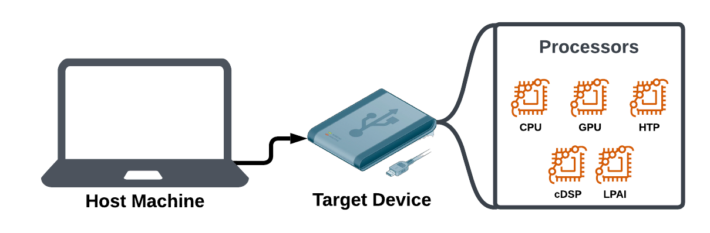

Qualcomm AI Runtime (QAIRT) Overview¶
Welcome to Qualcomm’s AI RunTime (aka “QAIRT”) documentation. QAIRT is a suite of tools that help you develop, run, and optimize AI models for Qualcomm-supported hardware.
There are several stages to go from having a trained AI model on your “host machine” to a runnable model on your “target device”. QAIRT helps prepare the proper files you will need on your target device. It also provides runtime interpretters for each backend and processor to turn model instructions into runnable code.

How to Use QAIRT¶
There are two primary SDKs which automate large portions of the AI build pipeline:
Qualcomm Snapdragon Neural Processing SDK (aka “SNPE”) is a simpler API and allows your model to execute using multiple processors. The tradeoff for that simplicity is that SNPE may have larger files and less granular control over how individual model operations are implemented.
Qualcomm AI Engine Direct (aka “QNN”) for granular control over how each operation in your model works. This SDK builds models to work with specific processors.
Generative AI Inference Extensions (GENIE) SDK. GENIE extends QNN specifically for generative AI use cases (Ex. LLMs).
With both of these SDKs, you will need to:
Get an AI model (ex. downloading a TensorFlow model).
Use CLI tools provided in the SDKs to convert the model into a format the target device runtimes can interpret.
Write an app in C, C++, or Java using the chosen SDK’s API to execute your model.
Transfer the built model, app executable, and QAIRT runtimes to the target device.
Run your app to execute inferences on the target device (ex. passing images in to be classified by Inception V3).
Benchmark and optimize your performance.
In order to use QAIRT, pick an SDK below and follow their tutorials to see the workflow in action:
Additional Runtimes (aka “Delegates”)¶
QAIRT SDKs provide runtimes that allow model operations to execute on target device processors (ex. CPU, GPU, HTP, etc.). For most situations, the runtimes provided by those SDKs will be the right ones for your use case.
There are several additional runtimes which are either optimized for specific model frameworks (ex. TFLite Delegate) or made for specific hardware components.
If these apply to your use case, you may need to follow the additional steps documented within to have your model execute in the proper environment:
TFLite Delegate - Specifically optimized for TFLite model files.